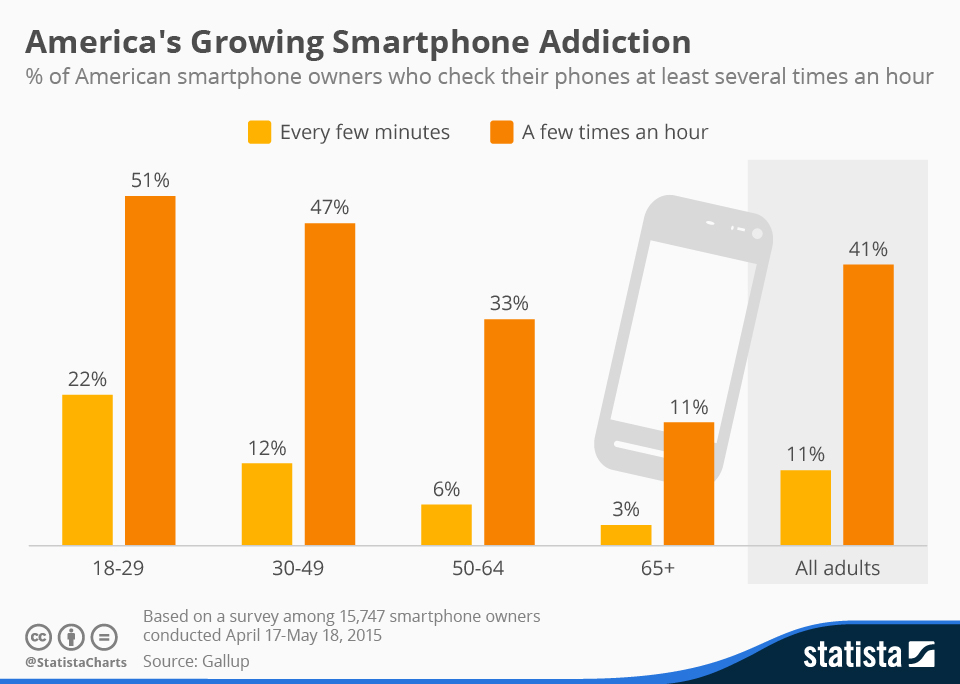
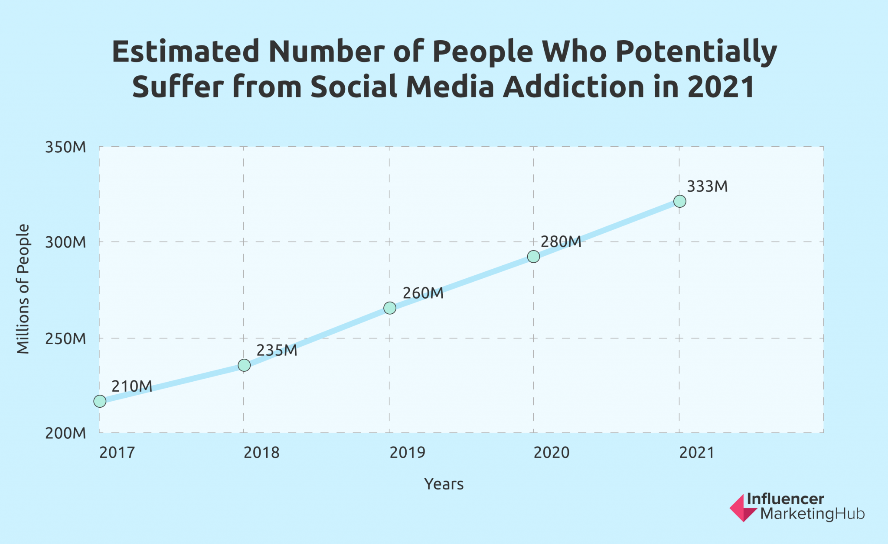
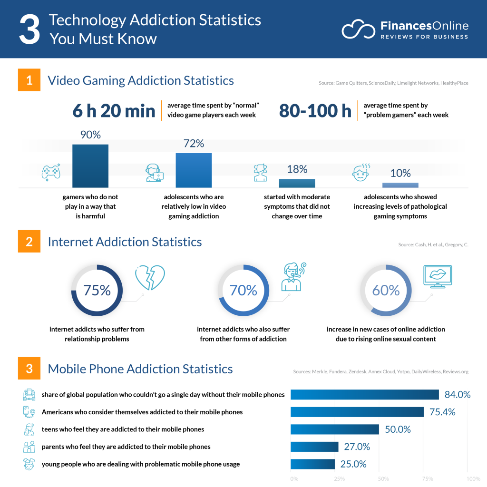
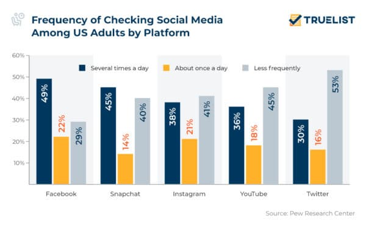

Graphs On How The Rise And Effects Of Screens

The rising Addications in Smart phones and how many people keep buying phones. The Y variable represents the growth of phone percahses, and the X represents what group is buying the phones.
The Growth in numbers that Social Media is causes mental health problems in people. The Y variable represents the millions of people affected, and the X represents the years this happened through the data was collected.
Gives you all types of info about the benifts and disadvantages of screen use and Screen Time. From just screens, internet, and than how the mobile phone affects the child.
How frequently people check social media because the grew an addication that must be satified. The Y variable represents the precentage the app is looked at, and the X represents which app is being looked at. The 3 bars represents the percentage the app was looked at per day and or week.